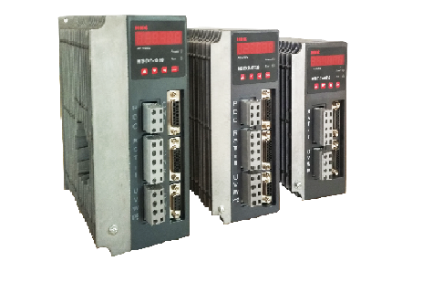

HSD2 series synchronous servo drive
HSD2 series synchronous ac servo driver is designed and manufactured, employing the advanced control algorithm based on the market demand, which can realize speed and accurate position digital control. With intelligent power module (IPM) and other latest technology design, simple operation, high reliability, small size, easy to install.
Cover a big range of servo motor, up to 5.5KW.
This servo driver has mature servo technology and the highest cost performance.
1.Speed range: Steady speed operation of the highest speed up to 5000 RPM, minimum speed 0.1 RMP.
2.Overload ability: torque can be up to 3 times of the rated load.
3.High dynamic response: speed loop bandwidth can reach 300 hz, process and load speed change little.
4. Input/output terminal: light coupling isolation, functional programmable, input terminal can realize servo enabled, alarm clear, torque limit and emergency stop, and other functions, output terminal can be controled with switch, relay and open collector triode, using darlington photoelectric coupler for output, can be connected with relay and photoelectric coupler, interfaces are more convenient to use.
5.Analog command control: speed, torque Shared a analog control, can difference or single-ended input, range - 10 v ~ + 10 v.
6.Position control mode: high speed light coupling isolation plus/signal signals, CCW/cw + signal and A/B phase + signal control mode, and employs the difference or single-terminal pulse receive mode, can effectively restrain the interference, optional instruction pulse smooth filtering, make the system in deceleration process smooth operation, increase the pulse signal digital filter and detection way.
7.Resonance inhibition: can rise to inhibit resonance effect by adjusting the internal parameters
8.Encoder signal output: encoder signal frequency division and then drive output through line
9.Protection function: over voltage, over current, overload, overspeed and encoder anomaly and other kinds of error detection mechanism, nip in the bud.
| Type |
HSD2-015 |
HSD2-020 |
HSD2-030 |
HSD2-050 |
HSD2-075 |
| Power supply |
Three-phase: AC220V -15%～+10% 50/60Hz |
| Environment |
Temperature |
Operation：0～40°C Storage：-40～50°C |
| Humidity |
Operation：40%～80%(non-condensing) Storage：Below 93%(non-condensing) |
| IP rating |
IP20 |
| Control of main circuit |
SVPWM control |
| Regeneration |
Built-in |
| Feedback type |
2500 ppr incremental encoder, 2500ppr wire saving encoder (10000 resolution) |
| Control mode |
Position |
| Analog input |
-10V～+10V，input resistance 10K |
| Digital input |
Five programmable input terminals (optical isolation). |
| Functions are: Servo-ON, Alarm clear, CCW over-travel inhibition, CW over-travel inhibition, CCW torque limit, CW torque limit, Emergency stop, Electronic gear select 1, Electronic gear select 2, Position deviation clear, Pulse input inhibition. |
| Digital outputs |
Three programmable output terminals (optical isolation), |
| Functions are: Servo ready, Servo alarm, Positioning complete, At speed reached, Electromagnetic brake release, Torque in-limit. |
| Encoder signal outputs |
Signal type |
A、B、Z (Differential output line driver), Z signal (open collector output) |
| Position |
Input frequency |
Differential input：≤500kHz(kpps)，Single-end input：≤200kHz(kpps) |
| Command mode |
Pulse+Direction；CCW pulse+CW pulse；A phase+B phase(orthogonal). |
| Electronic gear ratio |
1～32767/1～32767 |
| Monitor function |
Speed, current position, position deviation, motor torque, motor current, command |
| pulse frequency, etc. |
| Protection function |
Over-speed, over-voltage, over-current, over-load, regeneration abnormal, encoder |
| signal abnormal, excess position deviation, etc. |
| Characteristc |
Frequency response of speed |
> 300Hz |
| Fluctuation of speed |
< ±0.03%( load 0～100%)；< ±0.02%( power supply -15～+10%) |
| Speed control |
3.513888889 |
| Model |
length(C) |
Width(D) |
Hight（E） |
Heat sink |
| HSD2-015 |
162mm |
77mm |
162mm |
16mm |
| HSD2-020 |
170mm |
77mm |
172mm |
16mm |
| HSD2-030 |
185mm |
82mm |
182mm |
21mm |
| HSD2-050 |
200mm |
92mm |
186.2mm |
31mm |
| HSD2-075 |
215mm |
105mm |
207mm |
29.5mm |